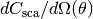
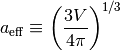

Arguments and parameters¶
GGADT supports the following options:
Flags¶
-
--help,-h¶ The “help” screen–prints usage information and available options.
-
--version,-v¶ Print the version number of GGADT on standard output and then exit successfully.
-
--verbose,-d¶ Be extra loud (useful for debugging)
-
--quiet,-q¶ Do not print progress. GGADT by default will print out a
percent complete: XX.X%statement during runtime; this option suppresses that.
-
--timing,-t¶ Do not output data. No output is useful if you care about measuring the runtime of GGADT.
-
--nthreads=value¶ You can set the number of threads (for OpenMP); GGADT executes
call omp_set_num_threads(nthreads)
-
--use-padded-fft,-s¶ This will force GGADT to do only one FFT. In order to provide you with the desired angular resolution of the differential cross section (set by
--nscatter), GGADT will pad the 2-d grid on which the shadow function is defined. Forcing GGADT to use a padded FFT, instead of the more efficient method without padding, will run much slower.
-
--force-numerical¶ This will force GGADT to use a numerical calculation of the differential scattering cross section for spherical grains (an analytical Anomalous Diffraction Theory solution is implemented by default).
-
--do-full-2d-fft¶ Do not utilize the fact that you can make a 2d FFT a 1d FFT if you only care about the orientationally averaged value of 
-
--save-shadow-function¶ You can save a copy of the 2d shadow function of your grain (useful as a sanity check or to make pretty pictures)
General options¶
-
--save-file-root=value¶ The “root” filename that the shadow function is saved to; for each orientation, GGADT saves the shadow function to:
[file_root]_shadow_function_o[00001, 00002, ..., N].dat
-
--parameter-file=value¶ Path to a correctly formatted parameter file.
-
--grain-geometry=value¶ Geometry of dust grain. Must be one of
SPHERE,ELLIPSOID,CUSTOM,SPHERES(or equivalently,AGGLOMERATION). These are not case sensitive.Note
A
SPHERESgrain geometry means that your grain is a conglomerate of smaller spheres. If you wish to use this grain geometry, you should supply a file (hereafter called a “agglomeration file”, see the next option) that defines the relative positions of the spheres that make up the grain. The sizes of these spheres will be normalized so that the effective radius of the grain is consistent with--aeff.
-
--aeff=value¶ Effective radius of dust grain.

-
--ngrain=value¶ The (square root) of the number of grid elements with which you would like to resolve your grain. To get accurate results out to about 4000 arcseconds, we’ve found that using
ngrain=64and higher provides sufficient accuracy for our needs.
-
--norientations=value¶ The number of grain orientations relative to the incoming X-ray photon over which to average the differential cross-section.
-
--grid-width=value¶ You can manually set the length of the grid (in microns) with this argument.
-
--axes-convention=value¶ The axes convention to use. Must be one of
DDSCATorMSTM(not case-sensitive). These conventions are explained in Angle conventions.
-
--angle-mode=value¶ Must be one of
RANDOM,SEQUENTIAL, orFILE.- RANDOM
- Specifying random will average over norientations grain orientations, with each angle chosen from a uniform distribution over the domain of orientation angles.
- SEQUENTIAL
- Specifying sequential will make GGADT use a set of angles that are evenly spaced over each of the orientation angle domains.
- FILE
- Specifying file allows you to give GGADT specific orientation angles to use in orientational averaging. The file mode requires that you also specify
--angle-fileas the path to a file containing a list of orientation angles.
-
--angle-file=value¶ Path to a file containing a list of orientation angles which GGADT will use to compute orientational averages. Only used when
--angle-modeis set toFILE.
-
--material-file=value¶ Path to file defining the energy-dependent index of refraction and dielectric constant for the grain material you would like to use. The material files must be formatted in the way that GGADT expects, namely with a two-line header,:
17 =ICOMP: amorphous olivine-like astrosilicate E(eV) Re(n)-1 Im(n) Re(eps)-1 Im(eps)
followed by data for the material:
1.000000E-05 2.435E+00 1.119E-03 1.080E+01 7.688E-03 1.240000E-05 2.435E+00 1.388E-03 1.080E+01 9.534E-03 1.771000E-05 2.435E+00 1.982E-03 1.080E+01 1.362E-02 2.000000E-05 2.435E+00 2.239E-03 1.080E+01 1.538E-02 ...
Ellipsoidal grains¶
-
--grain-axis-x=value,--grain-axis-y=value,--grain-axis-z=value¶ For ELLIPSOID grains, these define the ratio of the lengths of the x, y and z axes.
Agglomerations of spherical particles (single or multiple composition)¶
-
--agglom-file=value¶ Path to a correctly formatted agglomeration file. Several agglomeration files are included with the distribution (see Additional files), and if you wish to create your own, you must mimic exactly the format of these files.
-
--material-file1=value,--material-file2=value,--material-filen=value¶ Path(s) to the index file for material 1, 2, 3, etc. See Multiple Compositions.
-
--material-tag1=value,--material-tag2=value,--material-tagn=value¶ The name(s) by which material 1, 2, 3, etc. are referred to in the agglomerate composition file. See Multiple Compositions
-
--agglom-composition-file=value¶ Provides the path to a text file that lists the spherical agglomerates and a material ‘tag’ which is associated with an index file. See Multiple Compositions for more information.
The agglomerate composition file is assumed to be formatted with one header line, followed by as many lines as there are agglomerates in the grain, with each line containing the index of an agglomerate and a material ‘tag’:
j material tag 1 silicate 2 silicate 3 iron 4 silicate ...
Differential scattering cross section¶
-
--nscatter=value¶ The (square root) of the number of grid elements (in theta) with which you would like to resolve the differential scattering cross section.
-
--dtheta=value¶ Alternate to
--nscatter: this defines the spacing of the scattering angles (in arcseconds) that you would like to calculate the differential cross section.
-
--ephot=value¶ Energy of the incident X-ray photon in keV.
-
--ior-re=value,--ior-im=value¶ The real and imaginary components of the complex index of refraction, minus one. If
--material-fileis specified, these parameters are overwritten by the linearly interpolated value of the index of refraction at E =--ephot.
-
--max-angle=value¶ The maximum scattering angle for which you would like to calculate the differential scattering cross section.
-
--do-phi-averaging¶ If
--do-full-2d-fftis set, you have the option of also setting--do-phi-averaging, which averages the resulting over
over  at each orientation, giving you a 1d result. In certain cases (e.g. for
at each orientation, giving you a 1d result. In certain cases (e.g. for CUSTOMgeometries), this is faster than doing many 1d FFT’s. In almost all cases that we’ve run, however, doing a full 2d FFT makes things slower.
-
--nphi=value¶ When
--do-phi-averagingis set, you can set the number of values over which you average the 2d differential scattering cross section.
Energy-dependent scattering and absorption cross sections (integrated mode)¶
You must also define a --material-file to do this calculation.
-
--integrated¶ This flag tells GGADT that you would like to calculate the energy-dependent integrated absorption and scattering cross sections.
-
--nephots=value¶ Defines the number of photon energies to calculate the cross sections between
--ephot-minand--ephot-max. You can also define the energy spacing directly, via the--dephotparameter.
-
--dephot=value¶ Alternate to
--nephots, defines the energy spacing between different photon energies for which the cross sections are calculated.
-
--ephot-min=value¶ Defines the minimum photon energy for which the cross sections are calculated
-
--ephot-max=value¶ Defines the maximum photon energy for which the cross sections are calculated
Default parameter values¶
Default parameter values are loaded from the default.params file located in the parent directory of GGADT. You can edit this file, or (as a safer option), edit a copy of this file and pass the path as the value for --parameter-file.